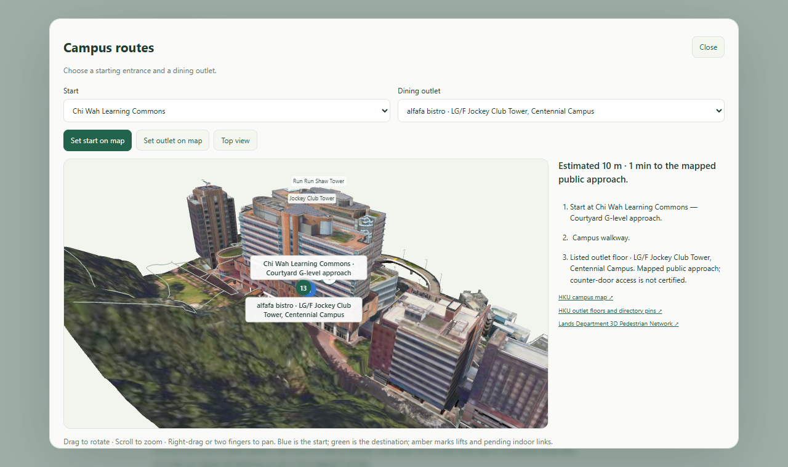
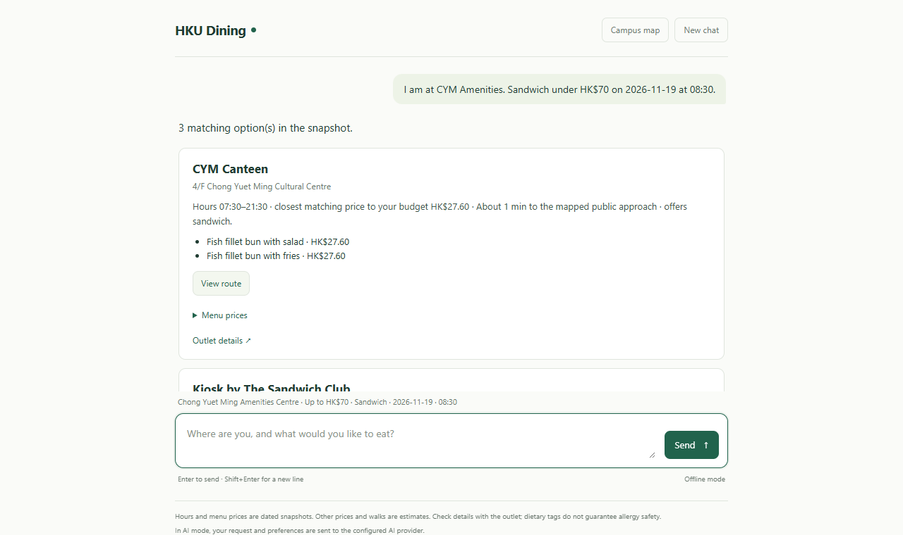
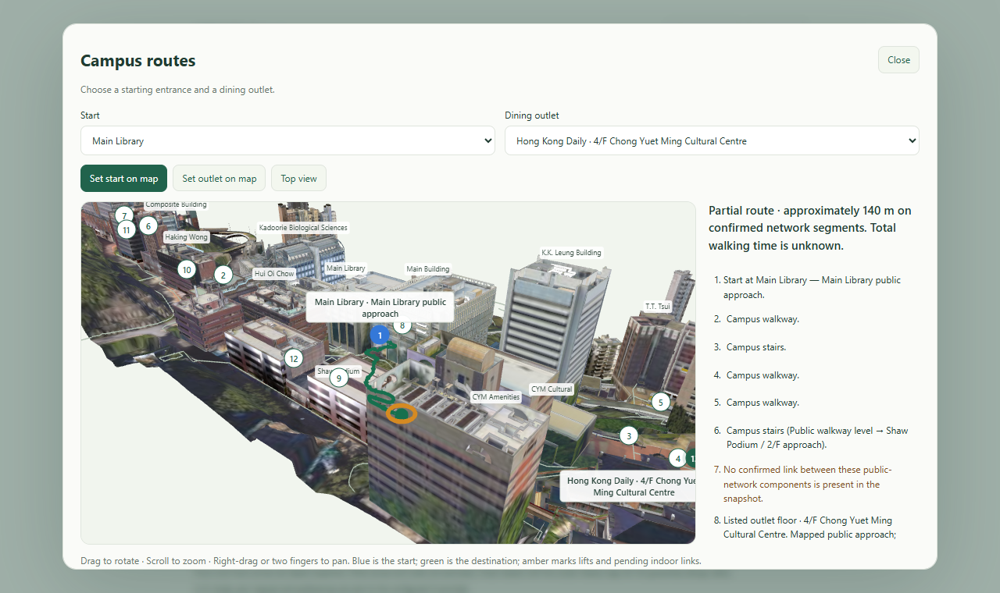

AILT9019 FINAL PROJECT · NOVEMBER 2026
Campus food for the break between classes
Describe where you are, what you want to eat and your budget. Refine the suggestions as you chat.
A local English-interface assistant accepting English and supported Chinese expressions. This is the public project introduction; the Python application runs locally.
Run the projectSource repository ↗
How a request becomes a recommendation
“我在智华想吃午餐，预算100，12:30”
- Understand
Rules and optional Groq JSON parsing merge supported conditions with the current browser session. - Filter in code
Schedules, diet tags, fixed menu prices and known required fees determine eligible options. - Order and explain
Complete route time comes first, then budget proximity. Model tie-breaking stays within validated candidates. - Refine and navigate
Cards expose menu prices and the same route result used for ranking. A follow-up updates the conditions.
What we built
With substantial Codex assistance, the team developed the curated dataset, context manager, validation and filtering rules, English chat interface, tests and source-coordinate route integration. Groq provides hosted inference; Three.js 0.180.0 provides the renderer. No model weights are bundled.
Dish prices, not a single restaurant average
We started at HKU’s catering directory, followed restaurant ordering menus, and captured menu screenshots. AI-assisted recognition produced spreadsheet rows; manual checking led to a full re-extraction of alfafa.
The dataset has 14 outlets and 677 menu records from 10 branches, including 675 priced items. Lunch/dinner, afternoon tea and drinks are distinct. Fixed prices, starting prices, extras and required fees remain separate.
For a HK$50 meal budget, HK$50.40 is excluded. A drink, extra or starting price cannot alone prove that lunch fits the budget.

Measured results and failures
Actual automated evidence, not a claim of independent user testing or real-time outlet verification.
| Check | Result | What it establishes |
|---|---|---|
| Fresh-clone regression | 63/63 | Rules, HTTP, menus, routing, assets and mocked adapter checks. |
| Offline scenarios | 20/20 | Normal, refusal, ambiguous and multi-turn behaviour under a fixed benchmark clock. |
| Initial strict live run | 7/20 | Exposed a quoted-budget incompatibility and provider failures. |
| Post-fix strict live run | 19/20 | Fallback is not counted as live-model success. A paced harness logs bounded retries. |
| Origin/outlet combinations | 182 checked | 64 complete public approaches; 104 partial routes; 14 area-origin choices. |
Final live run: 2026-11-19T01:46:34+08:00. M02 returned correct options but its first ranking used rules, so the strict live case failed. Full category counts and scope are in the public evidence summary. Detailed cases and code are in the teaching-team-accessible repository.
Observed failures and bounded repairs
Groq returned a budget as the string “50.00”. The repair normalises only a grounded positive decimal with at most two places. Exponents and non-finite values remain invalid. A second guard rejects meal categories inferred from cuisine, diet or a clock time without meal words. Three focused tests were added. The intermediate budget-only repair scored 17/20; earlier and final outputs remain in the evidence.
Boundary behaviour
An 11 pm request has no matching open outlet in the snapshot. Delivery and booking requests are refused. A missing indoor route remains partial and cannot satisfy a hard time limit. Provider limits or connection failures produce an explicitly labelled rule fallback.
Run locally
Python 3.11+ and a current browser are required. The final reproduction used Python 3.12.14 on Windows. Runtime requires no pip packages; the renderer and model assets are bundled.
- Clone or download the source repository. It remains private and accessible to the teaching team.
- Run
python app.pyor double-clickstart_windows.bat. - Open
http://127.0.0.1:8765and enter a request.
At Chi Wah, lunch under HK$100 on 2026-11-19 at 12:30.
Only vegetarian, under HK$70.
What is open at 11 pm?The first example should place alfafa near the top under the documented snapshot. A dietary follow-up retains location and budget conditions; no suitable outlet means no match rather than invented results.
python tests/run_checks.py
python evaluation/run_evaluation.py
python evaluation/run_live_paced.pyThe live harness spaces provider calls by 13 seconds and permits two bounded network/rate-limit retries. The interactive application instead retains labelled fallback on API failure. For AI mode, use .env.example to configure DINING_API_BASE, DINING_MODEL and DINING_API_KEY locally. Keep .env.local out of Git.
Demonstration
Watch the final Demo on YouTube ↗
The recorded walkthrough shows actual requests, menu prices, multi-turn refinement, complete and partial campus routes, and boundary/refusal behaviour. Its running modes remain visible.
Limits and responsible use
Menus and hours are dated snapshots. Breakfast is not yet collected. Price and route facts are not a guarantee that a dish is available or a passage is open today.
The official 3D path snapshot preserves elevations and directions; it does not resolve every indoor connection. Times use assumed walking and transition costs, not field measurements. Complete paths end at reviewed public approaches, not certified counter doors.
The assistant does not provide delivery, booking, off-campus recommendations, medical or allergy decisions, or accessible-route certification.
The browser keeps session context; New chat clears it. In AI mode, the latest message and relevant conditions are sent to Groq. There is no long-term application profile database. Codex-assisted outputs require human verification.
